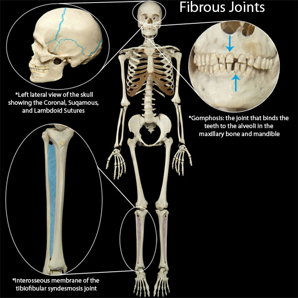

Fibrous joints are joints which connect two bones together through the use of fibrous connective tissue. These joints are stationary in nature as they allow very little movement to transpire. Fibrous joints do not contain a joint cavity. The three types of fibrous joints are sutures, syndesmoses, and gomphoses.
